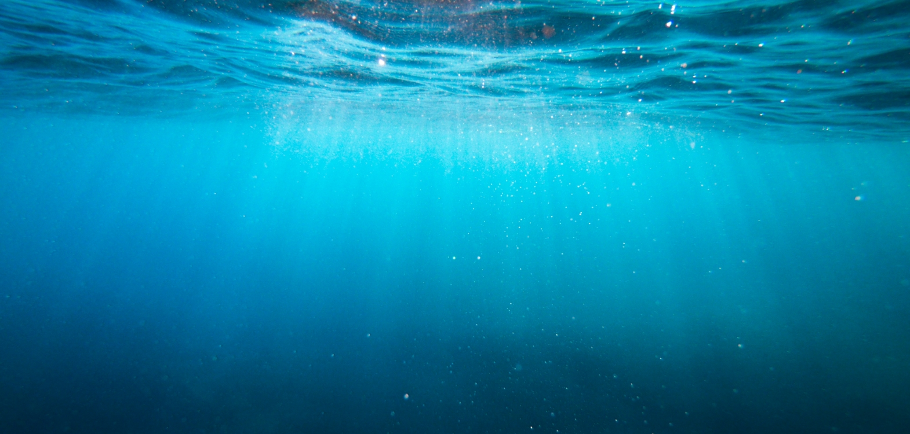

河川簡介及污染現況
111年6月環境水質監測數據品保摘錄
土壤及地下水污染物質概括可分為兩大類，分別是重金屬污染物質：砷、鎘、鉻、汞、銅 、鎳、鉛、鋅，以及有機物污染物質(概分為單環芳香族碳氫化合物、多環芳香族碳氫化合物 酚類化合物、氯化碳氫化合物、農藥等五類，各種環境污染物質及有毒物質的詳細資料及其性質 可以至 行政院環保署環境品質資料倉儲系統網站。或至勞動部勞動及職業安全衛生研究所查詢 各項危害物質的物質安全資料表 ，而在行政院農業委員會藥物毒物試驗所則提供各項農業用藥資料查詢。
什麼是卡爾森指數？
評估水庫水質優養程度的指標為「卡爾森指數，Carlson trophic state index」，簡稱 CTSI 。CTSI 係以水中的透明 度（SD）、葉綠素a（Chl-a）及總磷（TP）等三項水質參數之濃度值進行計算，再以其計算所得之指標值，判定 水庫水質之優養程度。國際上多以其為基準衡量水體優養化現象。它是以總磷、葉綠素a、透明度等項目按照公式 算出來的數值。
什麼是河川污染指數(RPI)？
「河川污染指數, River Pollution Index」簡稱「RPI」，這是目前用來評估河川水質之綜合性指標。RPI 指數係以水中溶氧量（DO）、生化需氧量（BOD5）、懸浮固體（SS）、與氨氮（NH3-N）等四項水質參數之濃度值，來計算所得之指數積分值，並據此判定河川水質污染程度；河川水質污染程度共可分為未受 / 稍受污染、輕度污染、中度污染及嚴重污染。
| 水質/項目 | 未(稍)受污染 | 輕度污染 | 中度污染 | 嚴重污染 |
|---|---|---|---|---|
| 溶氧量 (DO) mg/L | DO ≧ 6.5 | DO ≧ 6.5 | DO ≧ 6.5 | DO ≧ 6.5 |
| 污染指數積分值 (S) | BOD5 ≦ 3.0 | BOD5 ≦ 3.0 | BOD5 ≦ 3.0 | BOD5 ≦ 3.0 |
| 懸浮固體 (SS) mg/L | SS ≦ 20.0 | SS ≦ 20.0 | SS ≦ 20.0 | SS ≦ 20.0 |
| 氨氮 (NH3-N) mg/L | 1 | 1 | 1 | 1 |
| 點數 | S ≦ 2.0 | S ≦ 2.0 | S ≦ 2.0 | S ≦ 2.0 |